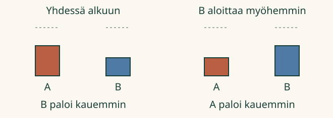

Aava haluaa valon, joka palaa pidempään. Loikka pyytää katsomaan koko tapahtuman: alusta loppuun.
Kumpi kestää kauemmin?
Vertaan, kuinka kauan jokin tapahtuma kestää.
Taputa kerran. Se on pian ohi. Laulakaa sitten tuttu laulu. Kumpi kesti kauemmin? Kesto tarkoittaa aikaa tapahtuman alusta sen loppuun.
Katso ensin tapahtuma
Kuvan kynttilät ovat aluksi yhtä pitkiä. Tässä kuvamallissa ne lyhenevät samaa vauhtia vain palaessaan. Painamalla Toista näet syttymisen ja sammumisen. Voit pysäyttää tai katsoa uudelleen.
Ilman liikkuvaa kuvaa voitte verrata aikuisen kanssa lyhyttä taputusta ja koko laulua. Alla olevat kuvat muistuttavat esityksen lopusta; ne eivät korvaa tapahtuman katsomista.
Kuvamalli on nopeutettu esitys, ei oikean kynttilän palamisajan mittaus. Tässä ei tarvitse laskea sekunteja tai lukea kelloa.
1. Kun aloitetaan yhdessä
Tapahtumassa ”Yhdessä alkuun” A sammuu, kun B palaa vielä. Silloin B palaa kauemmin.

Tutki alla tapahtumaa ”Yhdessä alkuun”. Käynnistä toisto, kun olet valmis seuraamaan kumpaakin kynttilää.
Tutki yhdessä alkavaa tapahtumaa
Malli on ilman JavaScriptiä alkuperäisessä kohdassaan: avaa mallin kohta.
2. Viimeinen loppu ei aina tarkoita pisintä kestoa
Tapahtumassa ”Toinen aloittaa myöhemmin” B syttyy vasta, kun A on jo palanut hetken. B sammuu viimeisenä. A ehti silti palaa kauemmin. Katso kummankin oma alku ja loppu.
Tutki alla tapahtumaa ”Toinen aloittaa myöhemmin”. Käynnistä toisto itse ja vertaa kummankin omaa alkua ja loppua.
Tutki eri aikaan alkavia tapahtumia
Malli on ilman JavaScriptiä alkuperäisessä kohdassaan: avaa mallin kohta.
Ennusta: jos kaksi tapahtumaa kestää yhtä kauan mutta toinen alkaa myöhemmin, kumpi loppuu myöhemmin?
Katso ajatus
Myöhemmin alkanut loppuu myöhemmin. Kestot voivat silti olla samat. Kokeile mallin valintaa Tapahtuma D.
Tutki alla tapahtumaa D. Toisto alkaa vasta omasta painalluksestasi.
Tutki yhtä pitkiä kestoja
Malli on ilman JavaScriptiä alkuperäisessä kohdassaan: avaa mallin kohta.
Uusi tilanne: yhdessä liikkeelle
Aava ja Loikka lähtevät huoneen poikki yhdessä. Aava pysähtyy ensin, Loikka jatkaa vielä. Kumman liikkuminen kesti kauemmin? Tässä Loikan: molempien alku oli sama, mutta Loikan loppu oli myöhempi.
Apua
Seuraa vain yhtä kerrallaan. Milloin se alkaa? Milloin se loppuu? Toista ja seuraa toista. Jos ne aloittavat yhdessä, aikaisemmin loppunut kesti vähemmän aikaa. Eri aikaan aloitettaessa pelkkä viimeinen loppu ei riitä.
Lisäpohdinta
Taputa ja liikuttele kättä. Voiko liikkeen tehdä lyhyen tai pitkän ajan? Sopikaa alku ja loppu. Sama liike ei aina kestä yhtä kauan. Kertokaa, mitä juuri teidän kokeessanne tapahtui.
Opettajalle ja ilman ruutua
Vuosiluokat 1–2, vaadittu esitieto M-MEAS-00. Tässä vertaillaan kestoa suureena ilman pakollista yksikön, kellon tai lukumäärän hallintaa. Sekunti ja kellon lukeminen kuuluvat erillisiin tavoitteisiin. Aikuinen voi lukea ohjeet. Värit auttavat löytämään kuvat, mutta vastauksissa ovat myös nimet A ja B.
Esityksessä kynttilät sammutetaan ennalta määrätyissä kohdissa. Samalla lähtöpituudella ja mallin samalla lyhenemisvauhdilla jäljelle jäävä kuva auttaa muistamaan keston. Oikeiden erilaisten kynttilöiden jälkipituus ei yksin kerro palamisajan järjestystä. Tämä on rajattu ajallinen kuvamalli, ei palamisfysiikan simulaatio. Toiston numeroparametrit ovat kuvan ajoitusta, eivät oppijalta vaadittuja aikayksiköitä.
Ilman laitetta: aloittakaa kaksi käden liikettä yhdessä ja lopettakaa toinen aiemmin. Kokeilkaa myös eri aloituksia. Lapsi saa vastata osoittamalla, näyttämällä tai omin sanoin. Ääneen vastaamista ei vahvisteta laitteella. Harjoitus antaa palautetta näiden tapahtumien vertailusta, ei yleisestä ajantajusta, itsenäisestä sekuntimittauksesta tai säilyvästä osaamisesta. Mitään ei tallenneta.
Lopuksi: mitä kahta hetkeä katsot, kun vertaat kestoa?
 Aava haluaa valon, joka palaa pidempään. Loikka pyytää katsomaan koko tapahtuman: alusta loppuun.
Aava haluaa valon, joka palaa pidempään. Loikka pyytää katsomaan koko tapahtuman: alusta loppuun.